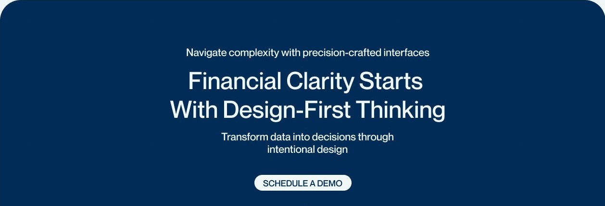
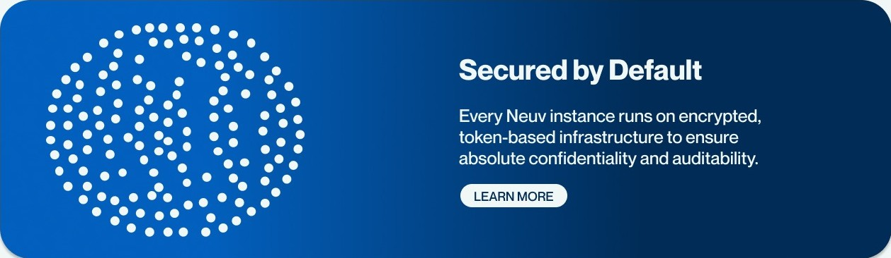
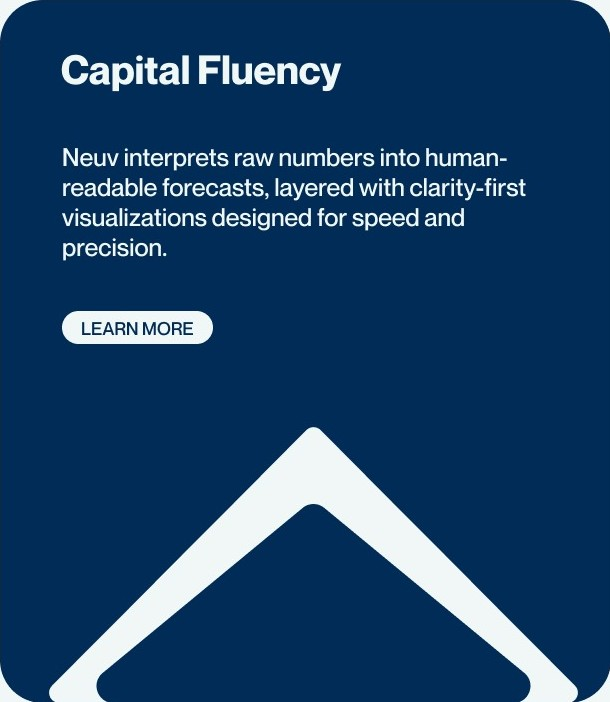
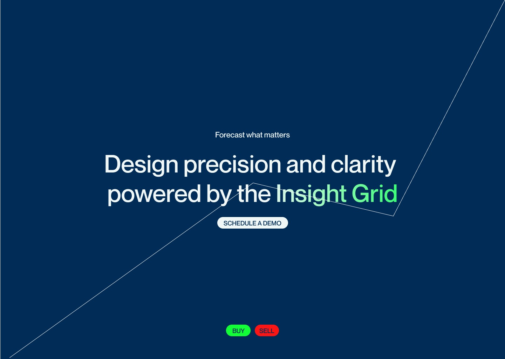
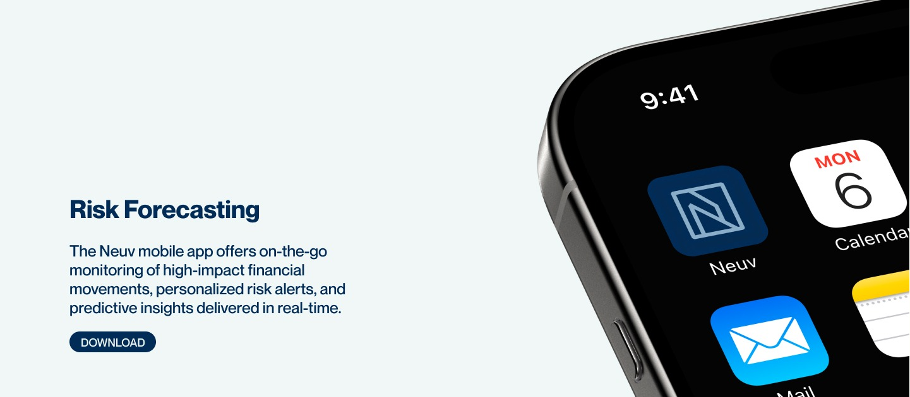

Project 04 / 08 — FinTech Concept
Neuv — Brand & UX System
Client
Self-Directed Concept
Role
Concept Designer, Brand & UX
Sector
FinTech
Year
2025
Context
Neuv is a concept fintech platform built on the idea that clarity in finance begins with clarity in design.
The goal was to translate data-heavy infrastructure into a high-trust, easy-to-understand interface and identity — from onboarding to dashboard, every screen mapped as part of one modular system.



Brand positioning, security messaging and capital-fluency framing — three faces of one system
Design Language
A bold logotype paired with quiet, editorial system type — structured, analytical, visual-first.
Logotype / Display
MONUMENT
EXTENDED
Bold, modern, anchors the brand in strength and clarity.
System / UI Labels
Neue
Montreal
Neutral and balanced, so dense data reads with elegance and precision.
The System
Layout logic, icon language, colour architecture and UI hierarchy — mapped as one modular system, not a set of screens.
Predictive Engine
Age-calibrated models surface anomalies and project potential risk movements.
Decision Layer
Insights delivered directly to dashboards, mobile apps and automated workflows.
5M
Data Points Tracked
Parsed monthly, from liquidity patterns to macro volatility.
100%
Secured by Default
Every instance runs on encrypted, token-based infrastructure.
1:1
Capital Fluency
Raw numbers interpreted into human-readable forecasts.

The Insight Grid — where the Predictive Engine surfaces its output

Risk Forecasting — the Decision Layer, on device
What I Did
- —Developed the full brand identity, from naming logic to the custom mark
- —Paired Monument Extended with Neue Montreal for a structured, editorial type system
- —Built the layout logic, icon language, colour architecture and UI hierarchy
- —Mapped every screen, from onboarding to dashboard, as part of one modular system
- —Built key visual narratives: 5M data points tracked, secure by default, insight-to-decision moments
Outcome
"Neuv's product thinking is expressed as brand — balancing emotional trust with analytical clarity."